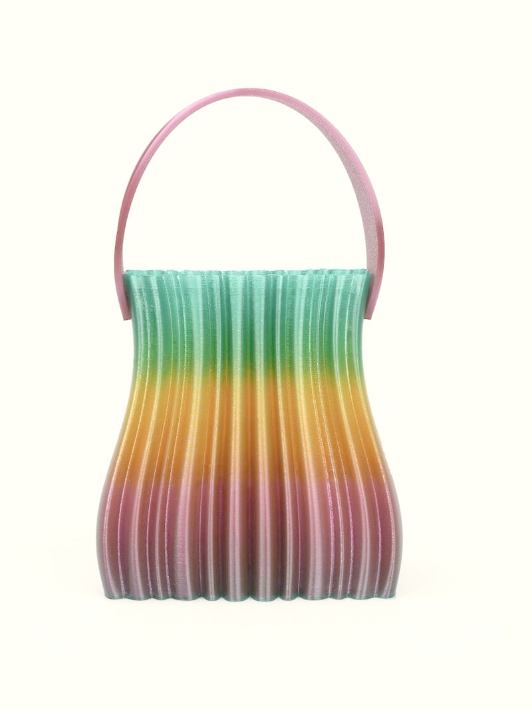
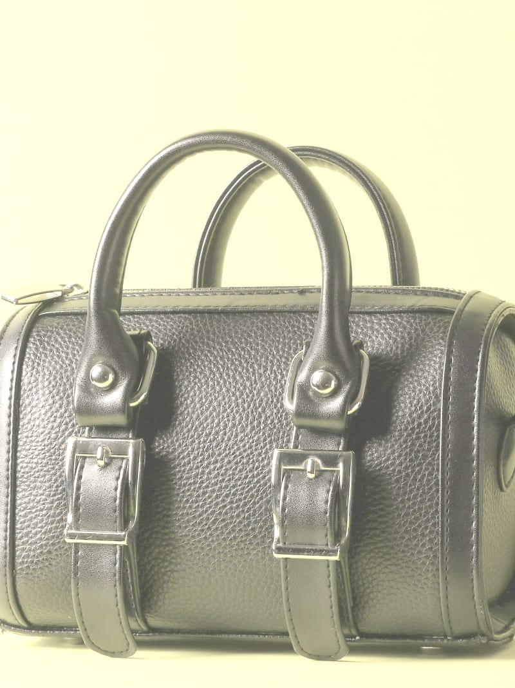
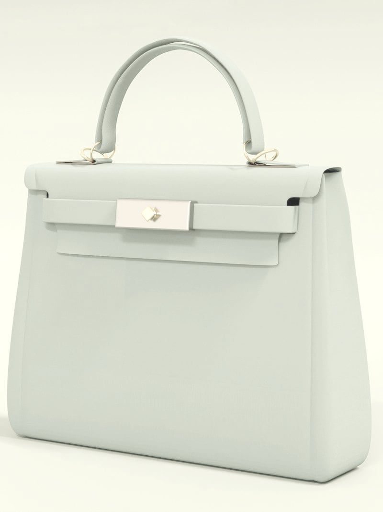
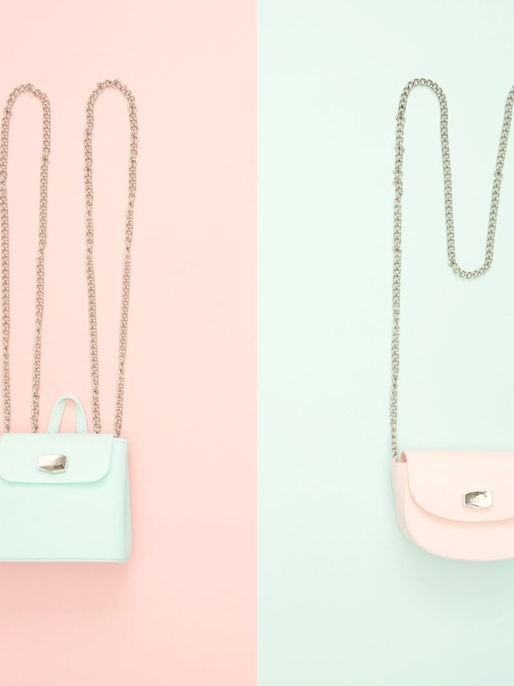
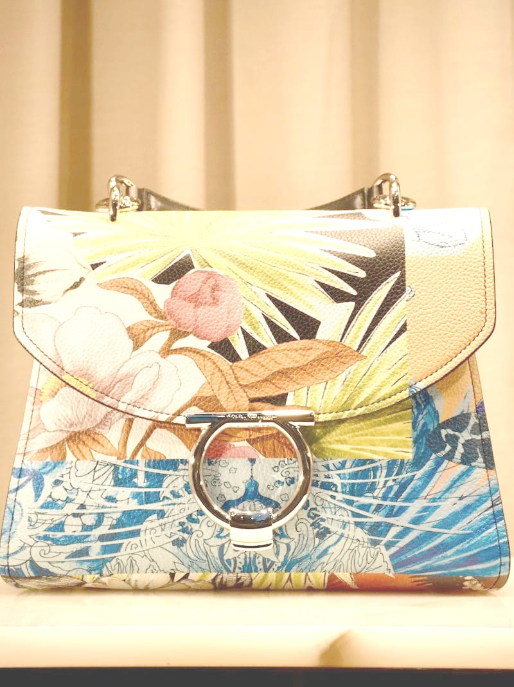
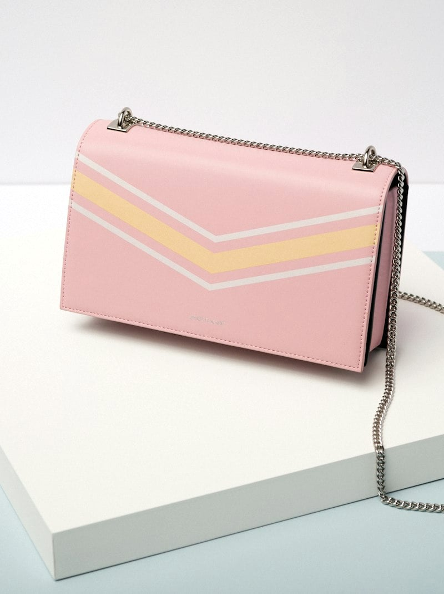

本期主打 · 按 publishedAt 最新选出（2026-10-03 10:06）
渐变褶皱手袋
绿到橙再到紫，渐变在褶皱上慢慢晕开，紫红提手一拎就走。像把傍晚的天色收进包里，慢慢挑。
It's Tote Season
商品区 bento 陈列：一条主打 + 五个单格（数据真值照抄 scripts/seed-products.sql）

本期主打 · 按 publishedAt 最新选出（2026-10-03 10:06）
绿到橙再到紫，渐变在褶皱上慢慢晕开，紫红提手一拎就走。像把傍晚的天色收进包里，慢慢挑。

黑色粒面皮革，双提手加一道皮带扣，精神又稳当。装得下手机、口红和一句俏皮话，通勤路上的老搭档。

湖蓝色光面皮革，白色矩形锁扣配一点金色五金。拎在手上，像拎着一小片晴天。

薄荷绿与樱花粉各一只，挂在银色链条上晒太阳。出门前选颜色，是每天的小快乐。

棕榈叶与粉花朵开在蓝波浪纹上，银色大圆环一拎就走。热闹得刚刚好的一只。

粉色翻盖压着黄白 V 纹，银色链条斜挎刚好。小小一只，装下出门的必备和一点点心动。
粉色翻盖压着黄白 V 纹，银色链条斜挎刚好。小小一只，装下出门的必备和一点点心动。
演示卡容器宽： px ｜当前排版：（阈值 280px：≥ 横排图左文右 / ＜ 竖排图上文下）